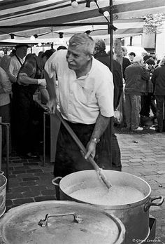
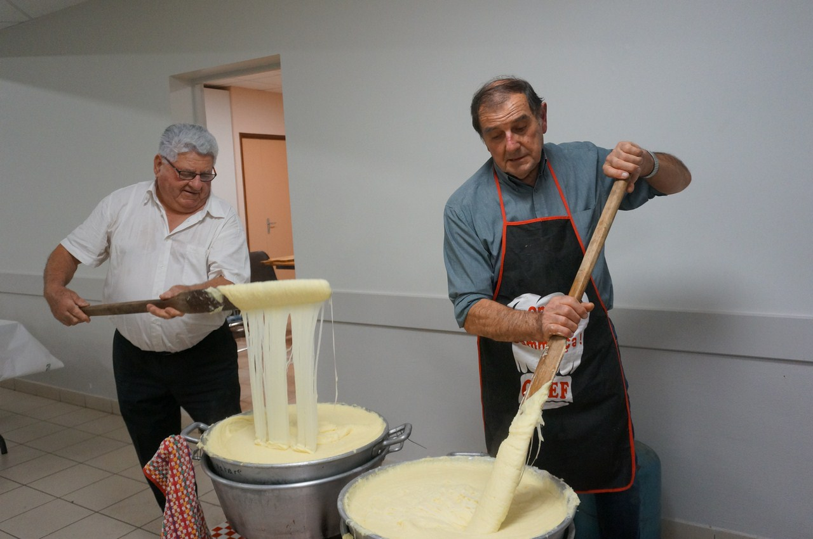

Tout commença en 1950 le jour où chantal MONTEILLET et
son mari René MONTEILLET passionés des spécialitées locales
décidèrent de fondé le doryphore filé.

C’est ensuite que mon grand-père Louis MONTEILLET et ma grand-mère Georgette MONTEILLET reprenèrent le flambeau pendant plus d’une génération soit 45 ans.
Après 45 ans de services mon père et mon oncle , contemplatif d’un tel
dévouement ne purent se résoudre a abandonné l’héritage famillial.
A eux deux ils ont tenu le restaurant durant une dizaine d’années.

C’est enfin en 2019 que mon frère et moi décidions de
rejoindre a notre tour l’entreprise familliale et que mon
frère servit le 30 janvier de cette année là , le premier
aligot fait par mes soins